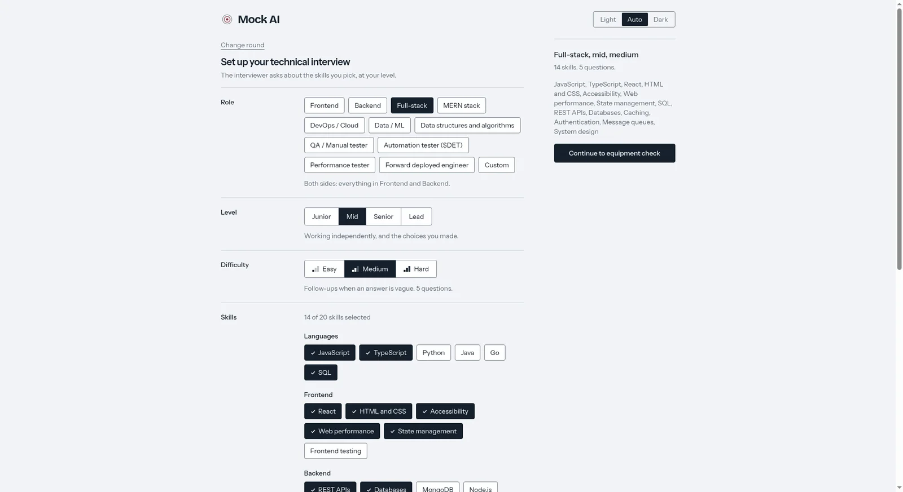
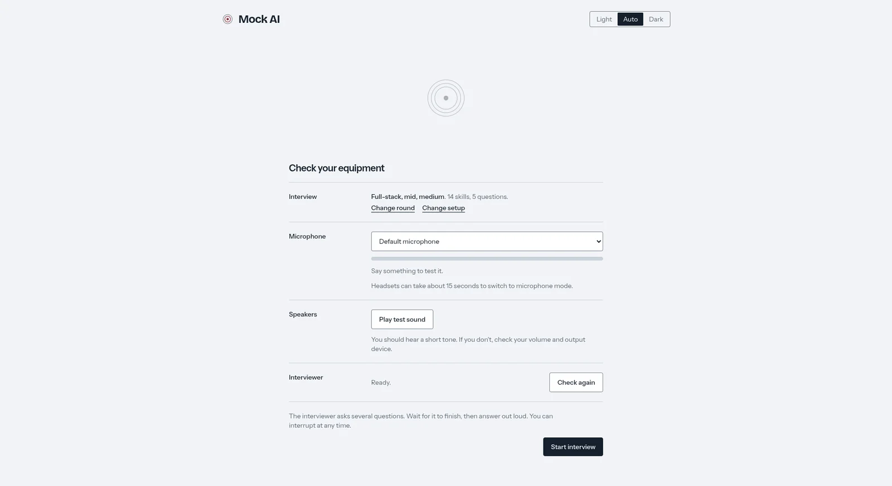
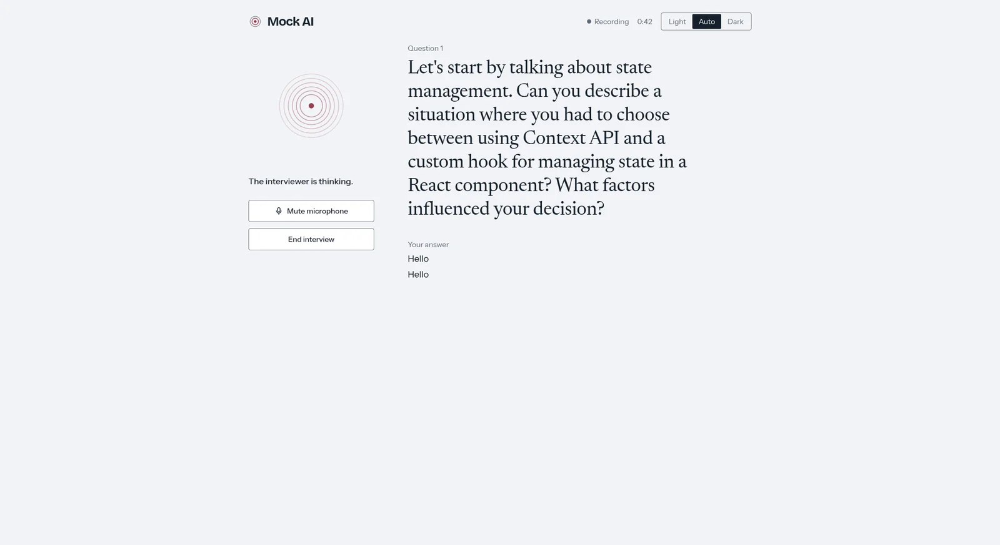
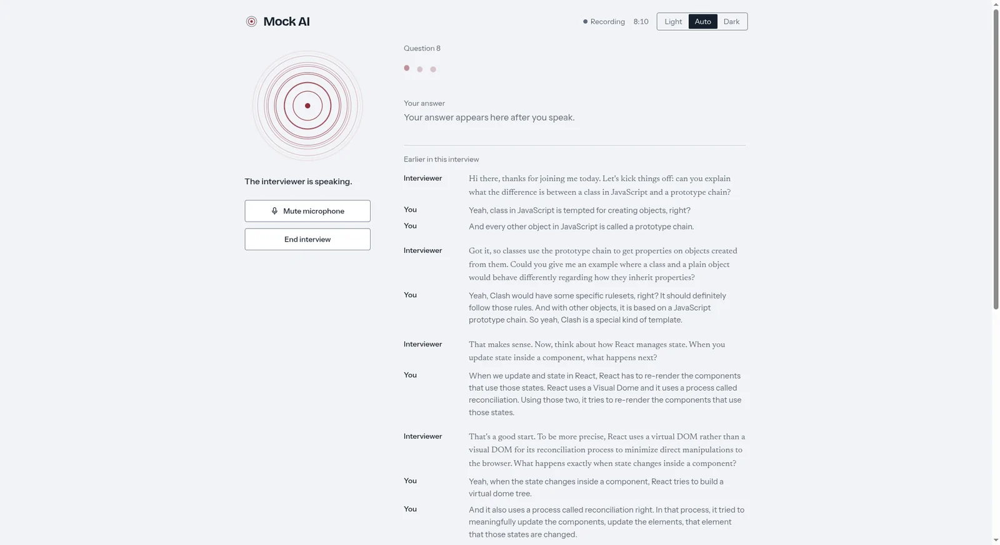
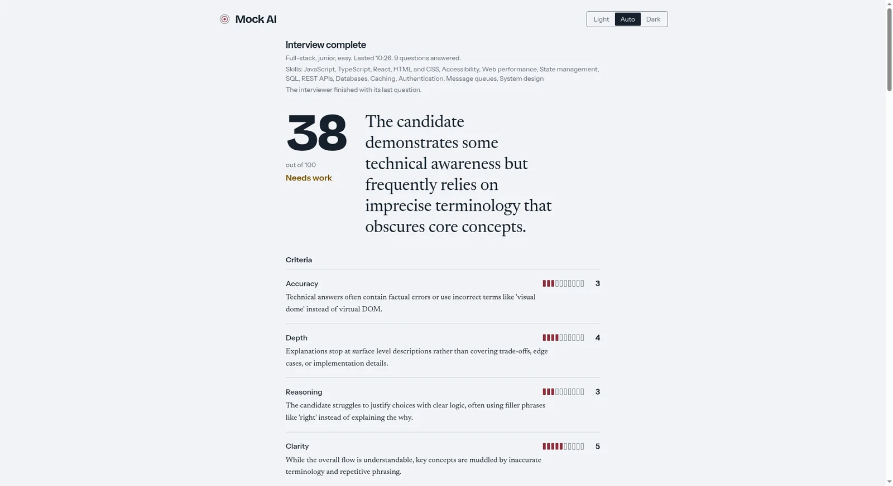
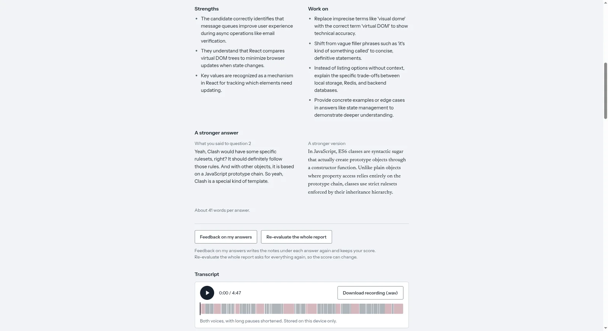
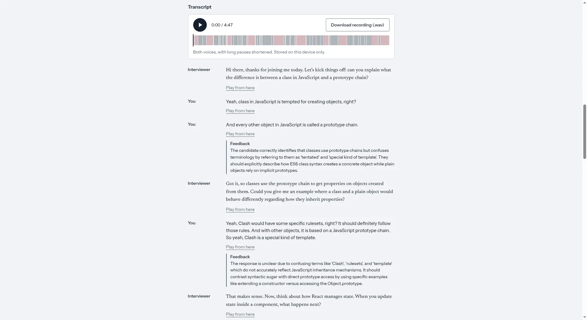
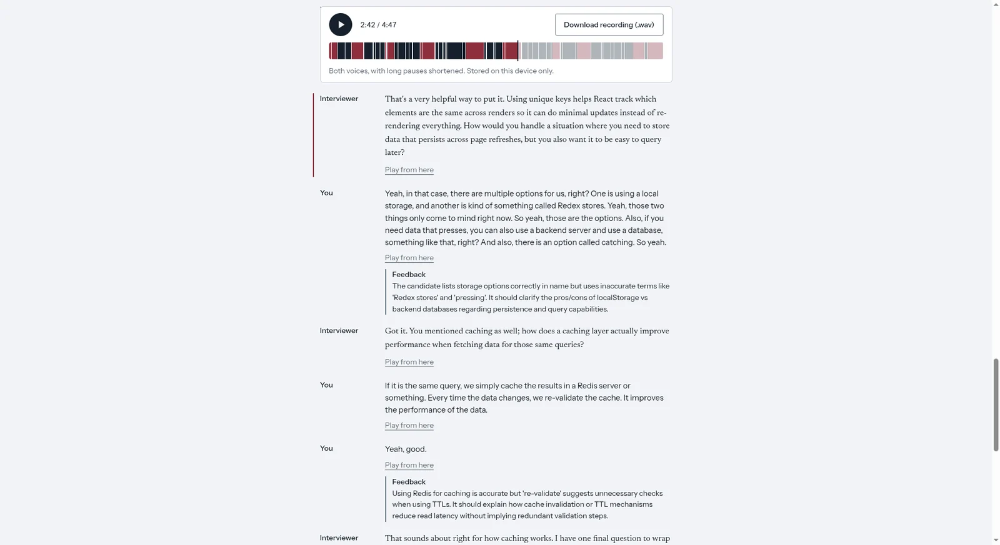

The problem
Reading interview questions is easy. Answering them out loud, under a little pressure, is not. Most practice tools are text chat, and they never show you how your answer could have been better.
What it does
Four modes from the home page: a recruiter call, a technical round, a behavioural round, and a sales call where the roles flip and the AI plays a prospect while you pitch your own offer. For a technical round you pick the role, level, difficulty and skills, from 39 skills in 7 groups.


The interviewer asks one question at a time, follows up when an answer is vague and stops talking the moment you talk over it. Asking it to explain a question doesn't use the question up, and, if that option is on, it can close the interview itself when you ask to stop or run out of time.


The report
- a score out of 100 and a mark out of 10 for each of the round's own criteria
- strengths, what to work on, and a note of two or three sentences under every answer
- a stronger rewrite of one of your answers
- a recording of both voices with the thinking gaps trimmed, playable from any line or downloadable as a
.wav - buttons to rewrite the whole report or only the notes, keeping the old version if the model fails




How it works
The browser streams the microphone to a FastAPI backend over one WebSocket. The backend decides when you've finished speaking, turns speech into text, has the language model write the reply and speaks it back sentence by sentence as it's generated. Every stage sits behind an interface, so each one runs locally or in the cloud by changing a setting:
- Voice detection: Silero, always on your machine
- Speech to text: Whisper through Hugging Face Transformers on the GPU, or Cartesia or ElevenLabs
- The interviewer: any model served by Ollama, locally or on Ollama Cloud
- Text to speech: Chatterbox on the GPU with its own voice for each round, or Cartesia, ElevenLabs, or Underdog Woof on the CPU
In the default local setup nothing is sent anywhere, and the recording never leaves the browser.
The hard parts
- Turn-taking. Telling when someone has finished speaking, not just paused to think, without cutting them off.
- Interruptions. When you talk over the interviewer, the screen and the model's memory keep only the words it actually said before you cut in.
- The recording. Merging both voices into one timeline, trimming the gaps, and linking each transcript line to its point in the audio, all in the browser.
- Useful scores from a small model. Schema-validated JSON with one retry and per-round criteria checked on the server. It returned a valid report in every test run, and strong interviews scored 75–88 while weak ones scored 13–20.
- Prompts per round. Each round has its own prompt and closing prompt on top of shared rules, so the model writes fresh questions from topics instead of reading a fixed list.
How I built it
- Every feature started as a written plan and ended with a test log of what was checked and measured.
- Test-first with Claude Code: each test was seen failing before the code was written. About 560 backend tests, 187 client unit tests and 92 Playwright end-to-end tests, including accessibility checks in light and dark mode.
- A stub mode runs the whole suite without any models; smoke tests run against the real ones. With Cartesia on both ends, the first audio came 3.9 seconds after the last word.
- Multi-stage Docker builds and Compose profiles for the local-GPU and cloud setups.